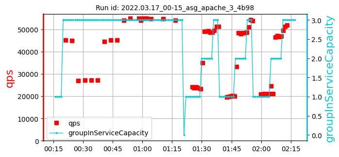
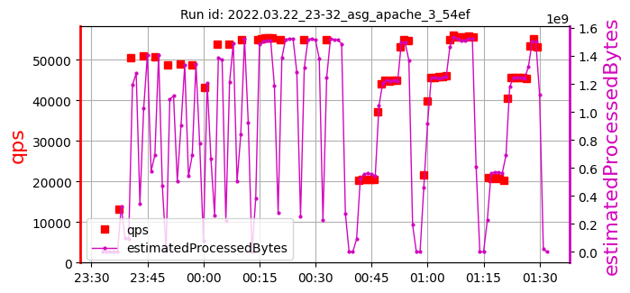

Please zoom out to see the full table.
asg_apache_3_ samples: 11
date generated: 2022-06-26 20:58:03.451490
| | Overall: |
max:
716
min:
366
mean:
618
|
max:
65527
min:
48678
mean:
57233
|
max:
99.90
min:
97.57
mean:
99.60
|
max:
1404
min:
802
mean:
1048
|
| 1. test id: 2022.03.16_03-17_asg_apache_3_4b98 [raw data] | run settings: cpu=70 pods=NA treads=70 sc_min=14 warmup=130 | |
Duration s | qps | CPU % | Err |
| | | [640, 681, 417]
579 | [64271, 64828, 64741]
64613 | [99.68, 99.68, 99.53]
99.63 | 1103 |
| 2. test id: 2022.03.17_00-15_asg_apache_3_4b98 [raw data] | run settings: cpu=70 pods=NA treads=70 sc_min=14 warmup=130 | |
Duration s | qps | CPU % | Err |
| |  | [646, 626, 667]
646 | [54705, 54761, 54009]
54491 | [99.59, 99.38, 99.67]
99.54 | 1002 |
| 3. test id: 2022.03.22_23-32_asg_apache_3_54ef [raw data] | run settings: cpu=70 pods=NA treads=70 sc_min=14 warmup=130 | |
Duration s | qps | CPU % | Err |
|  | | | [626, 366, 644]
545 | [54952, 54893, 54943]
54930 | [99.81, 99.81, 99.73]
99.78 | 802 |
| 4. test id: 2022.03.23_19-06_asg_apache_3_54ef [raw data] | run settings: cpu=70 pods=NA treads=70 sc_min=14 warmup=130 | |
Duration s | qps | CPU % | Err |
 | | | [655, 634, 673]
654 | [53972, 53831, 53547]
53784 | [99.78, 98.09, 99.71]
99.19 | 901 |
| 5. test id: 2022.03.24_03-52_asg_apache_3_54ef [raw data] | run settings: cpu=70 pods=NA treads=70 sc_min=14 warmup=130 | |
Duration s | qps | CPU % | Err |
| | | [642, 682, 422]
582 | [51788, 51924, 51858]
51857 | [99.81, 99.84, 99.84]
99.83 | 903 |
| 6. test id: 2022.03.24_20-04_asg_apache_3_54ef [raw data] | run settings: cpu=70 pods=NA treads=70 sc_min=14 warmup=130 | |
Duration s | qps | CPU % | Err |
 | | | [616, 641, 621]
626 | [55310, 55417, 55365]
55364 | [99.87, 99.85, 99.87]
99.87 | 1100 |
| 7. test id: 2022.03.27_07-06_asg_apache_3_0c47 [raw data] | run settings: cpu=70 pods=NA treads=70 sc_min=14 warmup=130 | |
Duration s | qps | CPU % | Err |
|  | | [709, 450, 658]
606 | [61037, 60343, 61049]
60810 | [99.89, 99.62, 99.87]
99.79 | 1102 |
| 8. test id: 2022.03.28_19-57_asg_apache_3_41cf [raw data] | run settings: cpu=70 pods=NA treads=70 sc_min=14 warmup=130 | |
Duration s | qps | CPU % | Err |
| | | [716, 637, 618]
657 | [59751, 61362, 61178]
60764 | [99.86, 99.9, 99.63]
99.80 | 1404 |
| 9. test id: 2022.03.30_20-36_asg_apache_3_41cf [raw data] | run settings: cpu=70 pods=NA treads=70 sc_min=14 warmup=130 | |
Duration s | qps | CPU % | Err |
| | | [650, 689, 426]
588 | [59050, 59309, 59082]
59147 | [99.74, 99.84, 99.78]
99.79 | 1105 |
| 10. test id: 2022.04.04_19-18_asg_apache_3_41cf [raw data] | run settings: cpu=70 pods=NA treads=70 sc_min=14 warmup=130 | |
Duration s | qps | CPU % | Err |
| | | [670, 709, 689]
689 | [49314, 48678, 48771]
48921 | [99.74, 99.73, 99.69]
99.72 | 802 |
| 11. test id: 2022.04.16_01-02_asg_apache_3_41cf [raw data] | run settings: cpu=70 pods=NA treads=70 sc_min=14 warmup=130 | |
Duration s | qps | CPU % | Err |
| | | [643, 562, 663]
623 | [65527, 64109, 65004]
64880 | [99.3, 97.57, 99.14]
98.67 | 1301 |
asg_apache_3_ samples: 11
date generated: 2022-06-26 20:58:03.451490
| | Overall: |
max:
716
min:
366
mean:
618
|
max:
65527
min:
48678
mean:
57233
|
max:
99.90
min:
97.57
mean:
99.60
|
max:
1404
min:
802
mean:
1048
|